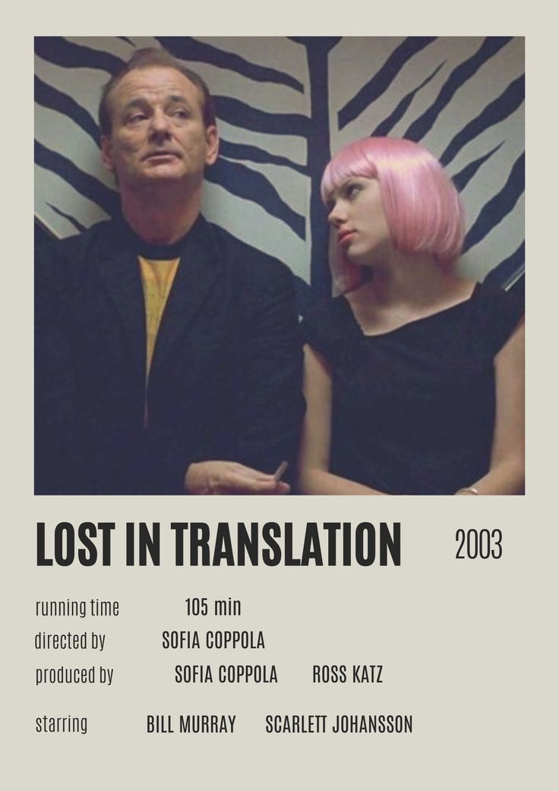

In the years after the Civil War, Jo March lives in New York and makes her living as a writer, while her sister Amy studies painting in Paris. Amy has a chance encounter with Theodore, a childhood crush who proposed to Jo but was ultimately rejected. Their oldest sibling, Meg, is married to a schoolteacher, while shy sister Beth develops a devastating illness that brings the family back together.
LOST IN TRANSLATION

A lonely, aging movie star named Bob Harris (Bill Murray) and a conflicted newlywed, Charlotte (Scarlett Johansson), meet in Tokyo. Bob is there to film a Japanese whiskey commercial; Charlotte is accompanying her celebrity-photographer husband. Strangers in a foreign land, the two find escape, distraction and understanding amidst the bright Tokyo lights after a chance meeting in the quiet lull of the hotel bar. They form a bond that is as unlikely as it is heartfelt and meaningful.